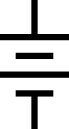
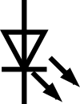

Resistor Flex part 2
How to use computers to build devices!
My presentation for day 2 of the Sunnyside Middle School community teaching week – instructions for building a night light and demonstrations of using an ESP32 to control peripheral devices!
Today:
- Review what we talked about last time
- Talk about this mushroom lamp!
- Use a computer to control a circuit
- Brainstorm cool projects!
Quick review
What makes an electric circuit?
Types of components!
- Types we talked about last time:
- LEDs
- Resistors
- Buttons
- Light-dependent resistors
- Transistors
- Types we didn’t experiment with last time:
- Capacitors
- Inductors
- Level shifters
- Many, many types of sensors
Breadboards make testing complicated circuits easy!

Transistors: Electrical switches
OFF if no current delivered to the Base
ON when even a tiny bit of current flows to the Base
Assemble a night light
Hands on challenge: Night light
Components:
- Breadboard
- 5 V power supply → 
- LED → 
- 220 Ω Resistor →

- 100 kΩ Resistor →
- LDR →

- Transistor →

- Jumper cables

Let’s talk about inventing!
My mushroom lamp (& making your own!)
The main components of the mushroom lamp


{kind=link}
{kind=link}
{kind=link}
{kind=link}
{kind=link}
You can use a computer to control a circuit

Example 1: A blinking LED
// Tell the computer where the LED is
#define LED_PIN 4 // The LED is on pin "5"
// the setup function runs once when you press reset or power the board
void setup() {
// initialize digital pin LED_BUILTIN as an output.
pinMode(LED_PIN, OUTPUT);
}
// the loop function runs over and over again forever
void loop() {
digitalWrite(LED_PIN, HIGH); // turn the LED on (voltage HIGH)
delay(1000); // wait for 1 second
digitalWrite(LED_PIN, LOW); // turn the LED off (voltage LOW)
delay(1000); // wait for 1 second
}Example 3: Use a potentiometer to control an LED’s brightness
#include <Arduino.h>
// Tell the computer where the potentiometer and LED are
#define Potentiometer_Pin 3 // The potentiometer is on pin "3"
#define LED_PIN 4 // The LED is on pin "5"
// Some information to help the computer make the LED's brightness adjustable
const int LEDC_CHANNEL = 0; // Use PWM channel 0
const int LEDC_TIMER_BIT = 8; // 8-bit resolution (0-255)
const int LEDC_BASE_FREQ = 5000; // 5 kHz frequency
// Run the startup instructions for the computer
void setup() {
// Tell the computer what to do with the LED
ledcSetup(LEDC_CHANNEL, LEDC_BASE_FREQ, LEDC_TIMER_BIT);
ledcAttachPin(LED_PIN, LEDC_CHANNEL);
// Apply a brightness of "0" to the LED to start
ledcWrite(LEDC_CHANNEL, 0); // Apply PWM value to LED strand
}
// Instructions to repeat over and over
void loop() {
// read the value from the potentiometer:
int potValue = analogRead(Potentiometer_Pin); // Read the potentiometer value, save it
int LEDbrightness = map(abs(potValue), 0, 4095, 0, 255); // Convert the potentiometer value to a brightness
// Turn on the LED at the calculated brightness level
ledcWrite(LEDC_CHANNEL, LEDbrightness);
}